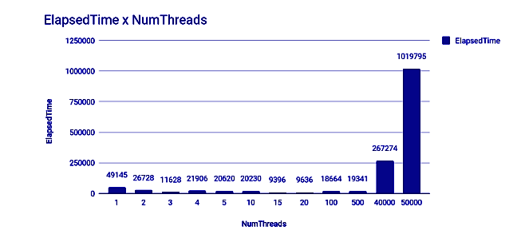
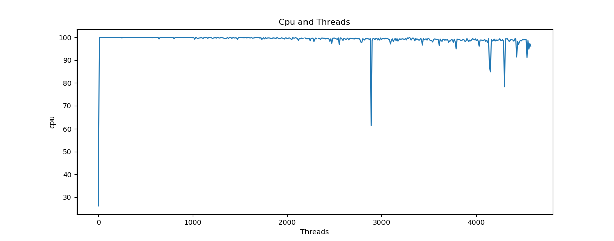

Primeiro vamos começar do básico: Suas configurações
Processador Intel(R) Core(TM) i5-3230M CPU @ 2.60GHz, 2601 Mhz, 2 Núcleo(s), 4 Processador(es) Lógico(s)
Memória Física (RAM) Instalada 4,00 GB
Memória física total 3,90 GB
Memória física disponível 1,61 GB
Memória virtual total 4,58 GB
Memória virtual disponível 2,01 GB
Modelo do sistema STI NI 1401
Disco de 500GB
Mais informações no link aqui
Programa Utilizado
Para está analise foi usado um programa em JAVA que é chamado BenchmarkNumerosPrimos, recebe como parâmetros de
entrada o número de threads desejada para executá-lo e o número máximo a ser buscado X. O programa irá procurar
a quantidade de números primos que existem entre 1 e X.
Neste exemplo, o programa executará usando VARIADAS threads e buscará a quantidade de primos entre 1 e
UM INTEIRO QUALQUER.
1 a 80000 por exemplo
Cada thread irá fazer a busca de primos para um sub-conjunto da faixa de números, de modo
que a carga seja dividida por todas elas.
Saída do programa:
Para cada execução do programa, dois arquivos serão criados contendo os
resultados das medições feitas sobre o seu desempenho, os quais serão localizados no diretório
“output-bench-primos/” criado no diretório de execução.
Os dois arquivos criados são:
o NumThreads: número de threads especificado na execução.
o NumeroMaximo: número especificado para buscar primos em [1, NumeroMaximo]
o StartTime: timestamp que registra o início da execução.
o ElapsedTime: tempo total gasto na execução, em milissegundos.
o MeanUtilization: utilização média de CPU durante toda a execução.
Gráficos do Primeiro Teste

O grafico acima mostra a relação entre o aumento dos numeros de threads ao aumento do uso da CPU

O grafico acima mostra o aumento e o pico do uso da CPU
Resultado ?
Algo bem incomun acontece, quando o numero de Threads aumenta para 500, 40.000 e
50.000 o uso da CPU diminui consideravelmente. Será que o core i5 de 2012 funciona melhor
sobre pressão?
É bem provavel que não, porém ainda não sei explicar o motivo desse fenomeno.
Aqui está outro exemplo de Uso de Thrads
Perguntas
Questão 1
a. Como o aumento da quantidade de threads afeta a utilização de CPU? Analise os resultados
e discuta possíveis causas deste comportamento.
Basicamente como falei acima, quanto maior o uso de Theads maior se torna a ultilização da CPU.
Pois como sabemos, a criação de novas thrads demanda um gasto maior de processamento.
b. Como o aumento da quantidade de threads afeta o tempo total de execução? Analise os
resultados e discuta possíveis causas deste comportamento.
Com toda certeza sim, com o aumento das threads o tempo total de execução aumenta consideravelmente pois o mesmo
tem que gerenciar uma fila enorme de processos, assim gerando um atraso.
Podemos ver isso no gráfico abaixo

c. Qual número de threads você acha mais adequado para executar este programa? Você acha
que sua escolha poderia ser diferente caso você executasse o mesmo programa em uma
máquina diferente? Justifique.
O número mais adequado pode ser uma pergunta relativa porém segundo minha analise é 15 threads, pois ele utiliza o máximo da CPU
com um bom tempo de resposta e execução. Neste caso sim, se eu executasse em uma máquina com
mais mémoria e mais processamento o resultado iria ser diferente, pois a gerencia das filas iria ser
otimizada. Já que o processador conseguiria tratar uma fila maior de requisições.
2 - Queremos agora analisar a escalabilidade deste programa. Então, vamos analisar como o
desempenho é impactado quando aumentamos a carga de trabalho do sistema. Neste problema, a
carga aumenta quando aumentamos o número máximo indicado para a busca de números primos
(NumeroMaximo). Execute o programa para valores diferentes do número máximo para a busca dos
primos. Exemplo: 100000, 200000, 300000, 400000 ... (não se restrinja a esses valores). Para esta
análise, mantenha fixo o número de threads, usando o número escolhido na letra (c) da questão 1.
Analise:
a. Como o aumento da carga do sistema (o número maximo) afeta o tempo total de execução?
Analise os resultados e discuta possíveis causas deste comportamento.
Sim afeta e muito, quanto maior for o numero mais trabalho tem a CPU, levando assim um maior tempo
de execução e de processamento e gerencias das threads. Porém, vevos novamente o fenomeno acontecendo
a partir de 50.000 o tempo cai consideravelmente. E tendo seu pico em 45.000. Algo acontece que quando as analises
chegam perto dos 50.000 sempre há uma queda.
Podemos ver isso no grafico abaixo:

Analise feita com 15 threads
b. Com base nos resultados de desempenho, você considera este programa escalável?
Justifique sua resposta e dê sua opinião sobre possíveis motivos dele ser ou não ser.
Até certa forma sim, o programa responde bem quando se tem um aumento médio de requisições por outro lado
quando temos um aumento grande é possivel ver alguns problemas principalmente no tempo total. O que ainda não
consegui entender é o motivo de que quando o numero de threads chega em torno dos 50.000 o programa mostra uma queda
brusca, tanto no tempo quanto na ultilização da CPU. (Isso com as threads fixas)
EXTRA
Essa maquina que analisei inicialmente seria a minha máquina nova, porém como tive o azar
dela ter que ir para garantia, falei com um colega de sala que tem um pc muito parecido com o meu
e decido pegar essas informações e compara-las aqui.
- Analise de outra máquina -
Configurações:Tipo do sistema PC baseado em X64
Processador: Intel(R) Core (TM) i5-7300HQ CPU @ 2.50GHz, 2496 Mhz, 4 Núcleo(s), 4 Processador(es) Lógico(s)
Versão/data do BIOS: Insyde Corp. V1.14, 27/12/2017
Fabricante da placa-base: KBL
Memória Física (RAM) Instalada: 8,00 GB
Memória física total: 7,89 GB
Memória física disponível: 3,66 GB
Memória virtual total: 13,4 GB
Memória virtual disponível: 6,38 GB
Espaço do arquivo de paginação: 5,50 GB

Podemos ver que a máquina acima consegue ser bem mais eficiente
do que a minha, em relaçao ao uso e a gerecias de várias thrads.Porém
algumas quedas bruscas também acontecem, no grafico acima podemos ver isso claramente
quando ele usou 2.800 threads.